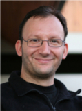

Expositores del Día GNOME 2009
Acosa a nuestros expositores en el grupo Día GNOME en Facebook

Estudiante de Ingeniería de Ejecución en Informática en el Instituto Santo Tomás en Talca, conoció Linux en el año 2000 (Debian GNU/Linux Potato) y desde entonces no a parado. Fué moderador del foro de tux.cl, organizador del evento “ExpoLibre” que se realiza en el IPST, sede Talca. En los tiempos “libres”, aporta a la causa del Software Libre, haciendo traducciones de descripciones de programas para Debian (http://ddtp.debian.net/ddtss/index.cgi/es). Recientemente se hizo cargo de debianizar el software de gestión de emuladores Gelide (http://gelide.sourceforge.net/) para x86. Actualmente parte de Staff de la Comunidad DebianChile.cl, ademas de estudiar y trabajar. Charla: PyGame y PyGTK. |
|
Estudiante de Ingeniería en Bioinformática de la Universidad de Talca, expositor en la XLIX reunión anual de la Sociedad de Bioquímica y Biología Molecular de Chile, ponente del VI ENFIMIN de la USACH 2007 , conoció el software libre el 2005 en el curso de programación II, donde utilizó por primera vez knoppix. Luego de eso, se involucro más en el 2007 con el día del software libre, junto con ello, ha cursado asignaturas propias de la universidad, tales como “Administración de sistemas GNU/Linux”, “Sistemas Operativos”. Ha sido organizador de la FLISOL en su versión 2008-2009 y partícipe de el grupo de usuarios de Free/Libre and Open Source Software, de la Universidad de Talca. Durante el 2008 estuvo en España Estudiando en la Universidad Politécnica de Madrid, “Técnicas de computación científica”, “Programación concurrente”, “0ptimización informática”, actualmente se encuentra realizando su tesis para obtener el grado de ingeniero en Bioinformática de la Universidad de Talca. Charla: Desarrollando una aplicación para el procesamiento de imágenes biológicas mediante Anjuta, Glade y GTK+. |
|
Candidato a máster en Software Libre de la Universitat Oberta de Catalunya, Jefe del Área de plataforma DTI y Profesor part-time de la Facultad de Ingeniería de la Universidad de Talca. Jorge tiene experiencia con UNIX desde el 1996 (AIX) y desde 1997 con GNU/Linux. Participó en la organización de los dos primeros Encuentros Nacionales de Linux, en los años 2000 y 2001. Fue uno de los miembros fundadores de GNOME Chile en el 2001, participó en GNOME Hispano, fue miembro de GNOME Foundation entre 2002 y 2003. Organizador del Congreso Nacional de Software Libre (CONASOL) de la Universidad de Talca el 2003, en el 2005 participó en la Comisión Internacional del LACFREE. El 2006 participó en el proyecto de la UNESCO de Inclusión Digital de los Pueblos Originarios de América Latina y a fines del 2007 espera comenzar a desarrollar su proyecto de tesis. Ha participado en varios eventos sobre Free and Libre Open Source Software y espera seguir haciéndolo a partir de este año de forma mucho más activa. Charla: ¡Bienvenidos al Día GNOME! |
|
Fabio es egresado de Ingeniería en Informática, y miembro de GNOME Chile, Utiliza Linux desde el 2004 aproximadamente. Obligado a Utilizar y desarrollar bajo GNOME, desde el 2005 en donde me convertí en fanático. Actualmente estoy colaborando en el BugSquad de GNOME realizando reportes, triage, y cerrando muchos bugs duplicados en varias aplicaciones. Fui parte de la organización del 1er y 2do encuentro de Linux de la Universidad Autónoma de Chile y Participado en varios proyectos y eventos de software libre a lo largo de Chile. Charla: GNOME BugSquad. |
|
Daniel se desempeña como Instructor en el CTM Centro Tecnológico Minero Antofagasta, en el cual aplica gráficas 3D con Herramientas Open Source mejorando los sistemas de capacitación existentes. Diseñador Industrial y Técnico en Sistemas Operativos, Socio Fundador del Grupo de Usuarios de Linux en Calama (Calix). Impartió clases de Sistemas Operativos Linux en Inacap, sede Calama, ha dado diferentes charlas referente al uso de herramientas de Diseño Gráfico Open Source y de Linux, En el 2003 fue Organizador del primer seminario para la migración a Linux en Calama. Miembro de GNOME Chile. Recientemente está encargado de la Coordinación del Arte en la Comunidad Ubuntu-Cl. Expositor en el Lightning Talks del Encuentro nacional Linux 2008 y Expositor en el GNOME Day. Daniel ha colaborado en el Proyecto Art GNOME “AGO” desde el 2005, en el 2008 fue uno de los ganadores del GNOME Wallpaper Contest para la release 2,24. Colaborador de Wallpapers en la Distribución Chilena Admelix y actualmente colabora en el Arte de proyectos como GPodder Gremote Gyrus y GNOME Store. Recientemente fue unos de los ganadores del Ubuntu Karmic Free Culture ShowCase 2009. Charla: GNOME Display Manager Artwork. |
|
Miembro colaborador de OpenOffice.org desde el año 2005 (Localizacióna español de la suite, control de calidad, educación, OOoAuthors).Miembro colaborador de Gnome (Bug Triagging), Coordinador de lasCharlas IRC Mensuales de Gnome Hispano. Socio de APESOL (Asociacion Peruana de Software Libre), Coordinador Nacional de OpenOffice.org Perú. Ingeniero Informatico y Estudiante de Maestria en Direccion Estrategica en Tecnologias de la Informacion (Universidad de Leon - España) Charla: Como volverse un hacker feliz de Gnome. |
|
Estudiante de la carrera Ingeniería en Bioinformática de la Universidad de Talca. El presente año se encuentra realizando su memoria en Android, enfocada al desarrollo de software para la asistencia de pacientes con la enfermedad de alzheimer. El presente año desarrollo un taller en la Jornadas Regionales del Software Libre, llamado “Android: Un acercamiento práctico”. Charla: Tutorial de GIMP. |
|
Ingeniero Civil Informático de la Universidad del Bío-Bío (http://www.ubiobio.cl/). Experto en administración de sistemas, redes y desarrollo de aplicaciones. Actualmente se desempeña como administrador de sistemas y redes en la Dirección de Informática de la Universidad del Bío-Bío. Germán es el creador del Encuentro Linux en Chile, es miembro fundador de GNOME Chile, miembro de GNOME Foundation (http://foundation.gnome.org/) (http://www.gnome.org/) y miembro desde sus inicio de GNOME Hispano (http://es.gnome.org/). Además, fue coordinador de la traducción al español del Escritorio GNOME entre las versiones 1.4 y 2.12. Co-autor del libro de Programación en GNOME. Es activista del Software Libre y es invitado continuamente a exponer sobre cualquier tema relacionado a Linux, Software Libre y GNOME. Se encuentran involucrado en el desarrollo del ambiente de escritorio GNOME desde el año 2000, en donde ha colaborado en diferentes proyectos. Actualmente es el mantenedor de las herramientas de diagnóstico de red (GNOME Net Tools) (http://www.gnome.org/projects/gnome-network/), gTuring y GNOME Keyring Manager (http://live.gnome.org/GnomeKeyring). Germán es un gran escritor… de correos electrónicos y notas varias sin mayor relevancia. Participa en el grupo de teatro de la Universidad del Bío-Bío (TUBB), a veces le dedica tiempo a la fotografía, el excursionismo, la literatura. Ultimamente tiene una debilidad por el tango y está aprendiendo a jugar Go. Charla: ¡Bienvenidos al Día GNOME! |
|
Estudiante de Ingeniería civil en Coputación de la Universidad de Talca. Ha sido organizador del "Dia del Software Libre" en su versión 2007-2008-2009 en Curicó. como también en la FLISOL 2008 Talca. Participa activamente en el grupo de usuarios de Free/Libre and Open Source Software de la Universidad de Talca, y también es miembro de la comunidad GNOME Chile. En su tiempo libre contribuye en proyectos como Gyrus y Eog. Durante el año 2008 y el 2009 estuvo 1 año en Alemania estudiando en la Universidad Técnica de Dresden, donde trabajo en el desarrollo de j-algo, la cual es una herramienta de visualización de algoritmos desarrollada por la TU-Dresden, bajo licencia GNU. Charla: Tutorial de GObject. |
|
Miembro colaborador del equipo de localización de GNOME al español. Ha contribuido y espera seguir contribuyendo con algunos parches de distintas aplicaciones en Gnome de su interes. Miembro del Grupo de Usuario Linux de Chiclayo-Peru LUGCIX, Bachiller en Computacion e Informatica, Project Manager en EQSOFT EIRL Consultoria y Soporte. Charla: Como volverse un hacker feliz de Gnome. |
|
Ingeniero de Ejecución en Informática de la Pontificia Universidad Católica de Valparaíso. Desde el año 2002 que es un fanático de Linux y el Software Libre en general. Ha participado en varios proyectos Open Source, destacándose en Ubuntu. Hace casi 2 años que recibió la distinción de Ubuntu Member, reconocimiento de carácter internacional por su trabajo y dedicación en Ubuntu-cl, que se mantienen hasta el día de hoy. Ha sido parte de la organización del Encuentro Linux en las ediciones 2007 y 2009. En su tiempo libre se dedica a devolverle la mano al Software Libre y participa de eventos o conferencias para ayudar a seguir difundiendo este movimiento. Charla: GNOME: La elección de Ubuntu. |
|

Ingeniero de Ejecución en Computación e Informática de la Universidad Católica del Maule (http://www.ucm.cl/), en la ciudad de Talca. Es miembro de GNOME Foundation (http://foundation.gnome.org/) (http://www.gnome.org/) y académico de la Universidad Autónoma de Chile. Además se desempeña como Jefe de Informática en Galilea S.A.. Ha colaborado en varios proyectos de Software libre entre ellos: Gestor, PIDA, Tepache, PyGTK, Gedit y Traza (Software de Trazabilidad para viñas). Fanático declarado de Windows se vió obligado por sus amigos ha demostrar su hombría, en 1997 comenzó a probar y conocer Linux, sigue intentando tratar de entenderlo hasta el día de hoy. Ha asistido a todas las versiones del Encuentro Linux y casi todas las conferencias de software libre que se hacen en Chile, hará lo imposible para no perderse ésta. Charla: Introducción a Python y PyGTK. |

Ingeniero de Ejecución en Computación e Informática de la Universidad del Bío-Bío (http://www.ubiobio.cl/), en la ciudad de Concepción. Involucrado en el mundo Linux y en el del Software Libre en general desde el año 1998-99, cuando era estudiante. Desarrollé como trabajo de tesis GALG (GNOME Algoritmos) utilizando Software Libre. Desde entonces participo en proyectos como gyrus (GNOME Cyrus/Imap Administrator)(http://www.gnome.org/projects/gyrus/), gevice (GNOME Network Device Manager)(), El Libro GNOME (versión Hispana). También participé en la organización de los 3 primeros “Encuentros Nacionales de Linux” en Concepción, en la organización del primer “Congreso Nacional de Software Libre” CONASOL (http://conasol.utalca.cl/), en Talca. Co-fundador de la comunidad GNOME Chile (http://www.gnome.cl/) y miembro de la Fundación GNOME (http://foundation.gnome.org/) (http://www.gnome.org/). Actualmente me desempeño como Ingeniero en Redes y Sistemas de la Universidad de Talca (http://www.utalca.cl/), incorporando muchos servicios, de los cuales la gran mayoría están basados en Software Libre, obteniendo sin excepción excelentes resultados. Charla: Introducción a Python y PyGTK. |

Cómo llegar
El Día GNOME se realizara en el Salón T de la UTFSM, puedes ver un mapa más detallado de la ubicación del auditorio dentro de la universidad.
{kind=link}
Ver Día GNOME en un mapa más grande